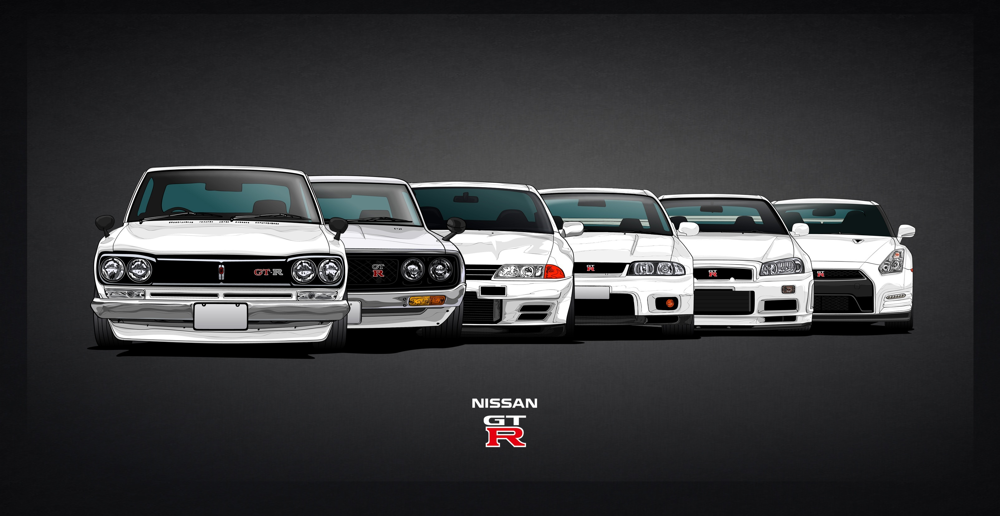
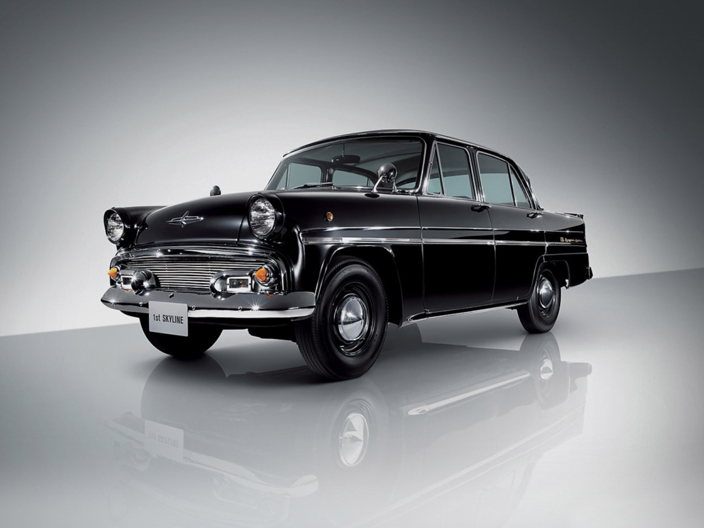
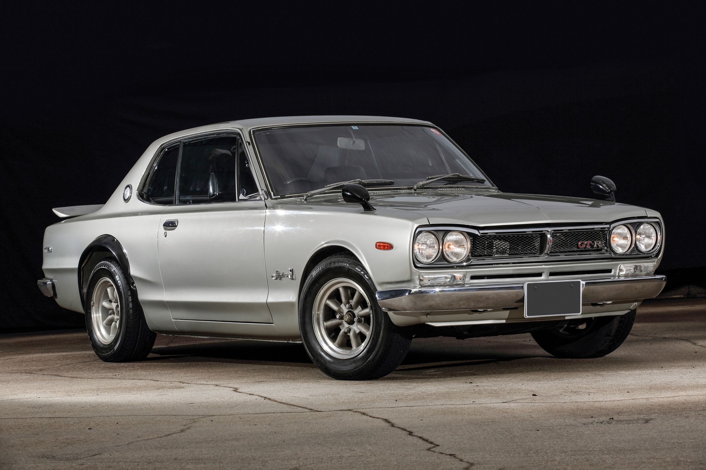
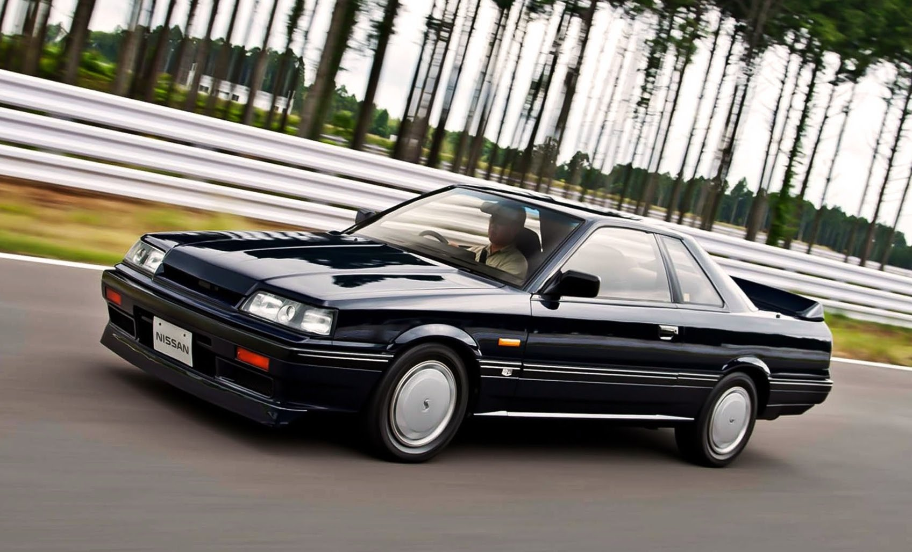
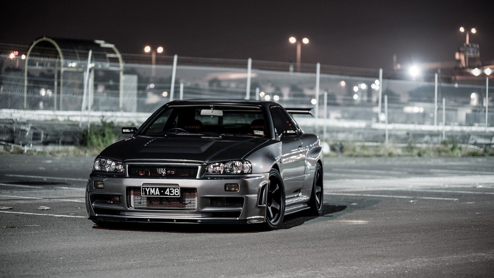
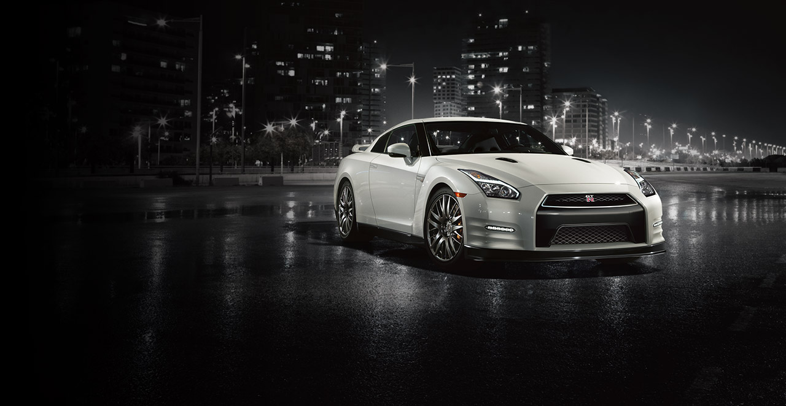

The History of the Nissan GT-R
This iconic brawler from Japan has made appearances in video games from Need for Speed to virtually every version of Gran Turismo. It has made appearances in no less than 6 of The Fast and Furious franchise productions. And sadly, the aptly named “Godzilla” wasn’t even fully available in the United States until 2008. Why? Some rumors claim that it was just too damn fast for the police to catch. Uh… yeah sure. Actually, it just didn’t comply with U.S. safety and emissions regulations. Not as sexy as the police thing but whatever. Of course, we are talking about the NIssan Skyline. But while the Skyline is relatively new in the U.S., the history of this highly coveted tuner car goes all the way back to 1957 in a ward of Tokyo called Suginami, Japan.
Skyline Goes Racing and Prince Gets Bigger
Moving ahead to 1964, Prince decided it was time to put a Skyline on the racetrack. Beginning with an earlier model, they did some major performance modifications including the addition of a straight six motor that made up to 125 horsepower in its top configuration. Highly successful in GT racing, the newly named Skyline 2000 GT (S54) was then put into full production in the Japanese market. Around the same time, the Japanese government decided that larger automotive companies should be created to ensure their success and longevity in overseas markets. Since Toyota had already merged with Daihatsu, the next logical partner was Nissan. Prince joined with them in 1966, thus cementing the future for the Skyline.
Three Letters Never Went So Fast
Making its debut at the 1969 Tokyo Auto Show was the first high performance version of the Skyline, the GT-R. Power comes courtesy of a DOHC 2.0 liter inline 6 making 160 hp. Originally configured as a four door sedan, a two-door coupe was introduced in 1971. Much like the factory race cars made in Detroit, the Skyline was stripped of all unnecessary weight in order to improve racetrack performance. And while the later year Skylines are more prevalent in The Fast & Furious movies, you will catch a glimpse of a ‘71 in 2011’s Fast Five.
1980s and the R31,R32, and R33
After little success with the 2nd generation GT-R in the ‘70s as a result of the gas crisis, Nissan came back strong in the eighties with the introduction of the r31,32, and 33 GT-Rs. Production on these models began in 1985 and the GT-R maintained this general body design through 2002. The R31 saw the reintroduction of the DOHC inline 6 engine, producing 210 hp. Introduced in 1989, the R32 featured a NISMO twin-turbo 6 cylinder with AWD, capable of 280 hp.
Domination
The GT-R R34, produced from 1999 to 2002, was the culmination of over a decade of competition resulting in the most technologically advanced Skyline… and priciest with a sticker of just under $90,000. A ceramic twin-turbo inline 6 put out 276 hp with full-time AWD. New features included an LCD multifunction display that put important engine data right smack in front of the driver as well as 6 speed Getrag transmission. While the Nissan Skyline has been a fixture in Japanese movies and television since its inception, an argument could be made that The Fast & Furious movies helped boost its popularity in places—like America—where it wasn’t widely available. And for the deep pocketed GT-R fan, you can actually own the GT-R driven by the late Paul Walker in 2009’s Fast and Furious. Now let’s talk price for a minute. This highly modified GT-R sports a 550 hp motor along with numerous suspension and other mods. It is also a car from a movie. So this car has been appraised at a minimum of $800,000 up to $5.5 million.
It’s Finally Here
After much speculation, including a concept vehicle shown in 2001, the GT-R is coming to America. And we are not talking about the handful of Japanese market Skylines legally converted to U.S. regulations. In July of 2008, you could go to your local Nissan dealer and get one, assuming the $70,000 sticker price wasn’t an issue. At this point, the GT-R was no longer carrying the Skyline moniker. The highly successful inline six cylinder was also shelved. In its place was an alloy V-6 with twin huffers capable of 473 hp and 434 ft lbs of torque. Top speed is now an extremely impressive 195 mph with 0 to 60 times in the low 3 second range. Styling is modern and very aggressive but with considerable homage paid to previous GT-R models. And while this has been disputed by other parties, Nissan claims the GT-R on stock Dunlops lapped the Nurburgring in 7 minutes 26 seconds, making it one of the fastest production cars in the world. That said, it was certainly worth the wait.
